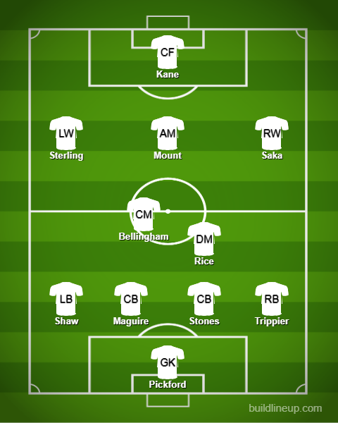
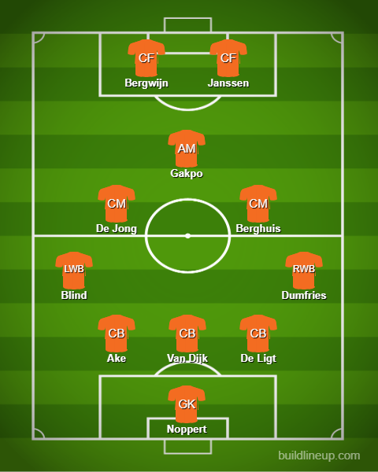

Day 2
England v Iran
Great game from England. Southgate actually ditched the 5-back formation which means the sky is officially falling. Wowwwwww I am surprised. Iran was seriously not even close anywhere. There were like I thought. Very defensive and tried to break on the counter. Due to that, they got one of the goals from Taremi. Dunno why Azmoun didn’t start but he got some minutes. If they don’t get their act together I think USA and Wales will have good shot against them. Coming to the match, Iran was lost from the moment they lost their keeper to a possible concussion. Bellingham made the breakthrough, becoming the first teenager to score at the World Cup with a brilliant header(Cross from the great Shawberto Carlos - Luke Shaw). Then it was a great volley from Saka and a great finish from Sterling gave them 3 at the end of the half. Then it was just great work from Saka to make it 4. Later on, Taremi got one and Maguire was beaten for pace(Other teams take note. He is dangerous in corners but you can beat him for pace)
England

Iran
Senegal v Netherlands
This was an amazing game. I am impressed at Senegal with the way they managed to attack really well but without Mane, the dropoff was kind of evident. The threat from Sarr and Diatta was very evident and Dia and Dieng were ineffective at ST. The Netherlands however apart from Frenkie De Jong bottling a golden chance on the counter was semi-decent as well. They managed to get chances from the likes of Gakpo, Berghuis. Noppert made a start in goal(Man is 28 and was considering retirement to become a police officer and now he has got a WC clean sheet) and he was fairly decent. Managed to hold his own which is always good. In the end, it was 2 bad errors that were capitalized and credit to the Dutch for doing it. Gakpo starts a move and FDJ(Frenkie De Jong) provides a lovely ball for the first one. Finally, Klaasen scored after a good counter to take advantage of a tiring Senegal. Keep an eye on Gakpo. If he has a good WC, it will be dangerous for Man United(I’m a fan so I am worried). Another thing is: Is there a possibility of Timber starting because, as good as De Ligt is, he was rather shaky for the most part of the game. Let’s see what Van Gaal decides.
Senegal
Netherlands

USA v Wales
Weird referee. “Soccer” almost won and Bale had to bail out Wales again. Let me start by saying that the referee was really weird, to say the least, and that’s me being kind. He was dishing out the cards in the whole game, to be honest. First half: A good run by Pulisic at the defense and a good pass to Weah opened the scoring. Besides that Hennessey had to be alert to avoid conceding a weird own goal. In the second half, Wales slowly had an influence in the game with chances from the likes of Ben Davies and Kieffer Moore. Finally, a penalty was given when Zimmerman pulled Bale down and he converted with a fast and true penalty. I think these guys will be the major contenders for 2nd spot unless Iran pulls itself together.